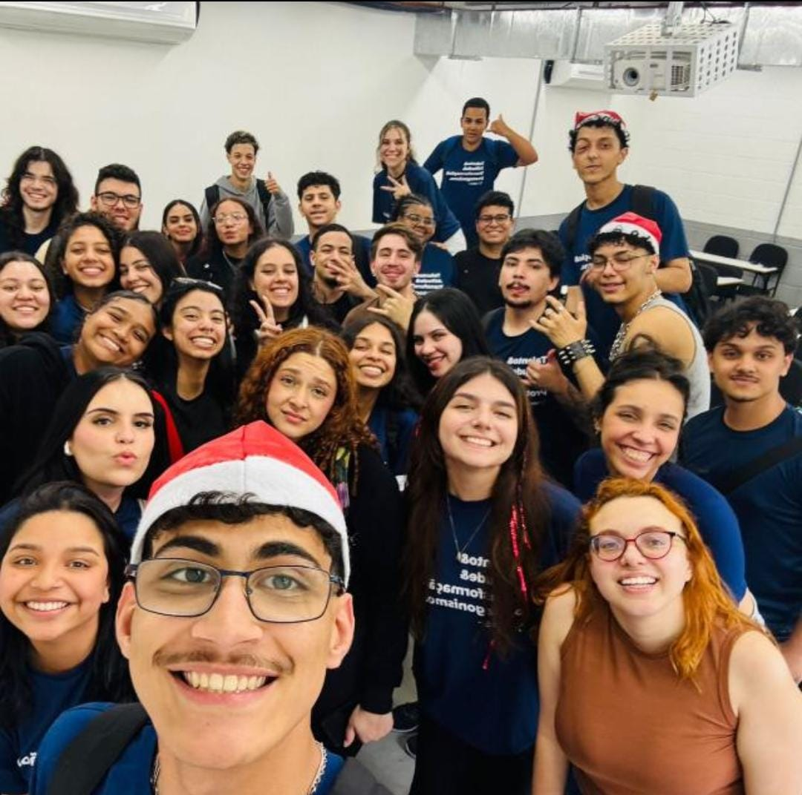

Democratizando o acesso à cultura e ao lazer em São Paulo.
A PAULISTOUR é um projeto criado por jovens aprendizes da ESPRO com o objetivo de democratizar o acesso à cultura e ao turismo na cidade de São Paulo.

Olá! Eu sou a Lumi IA. Digite o tipo de rolê ou lugar que você quer conhecer em São Paulo!